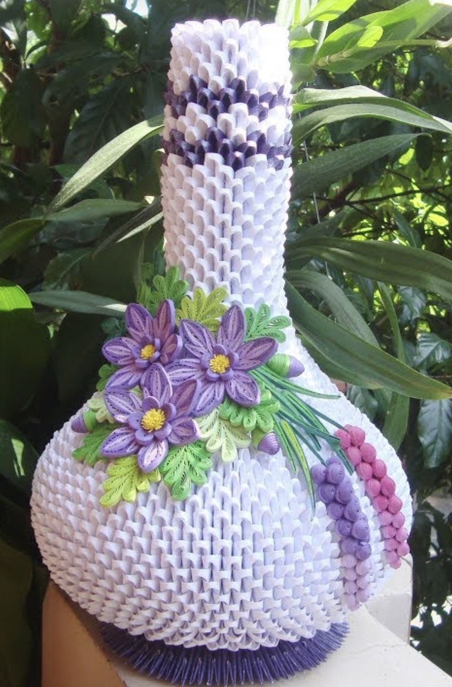

A very simple piece of origami, such as a star or a candy cane, might only take a few dozen of these triangles. Much
more elaborate pieces, however, such as animals, cartoon characters, and sculptures of larger objects, can require
hundreds or even thousands of individual triangles to be folded and assembled.
The following are some examples of easy 3D origami designs.
Watch the following video to learn how to make them:
MediumHard
Medium
The following are some examples of 3D origami designs at the medium level.
EasyHard
Hard
If you feel adventurous, you may try some of difficult projects as seen below.
 EasyMedium
Tutorials for more designs
Here are some of the YouTube channels I like to look and refer to for inspiration for my next project! Maybe one of
their videos may inspire you to create your very own 3D origami project!